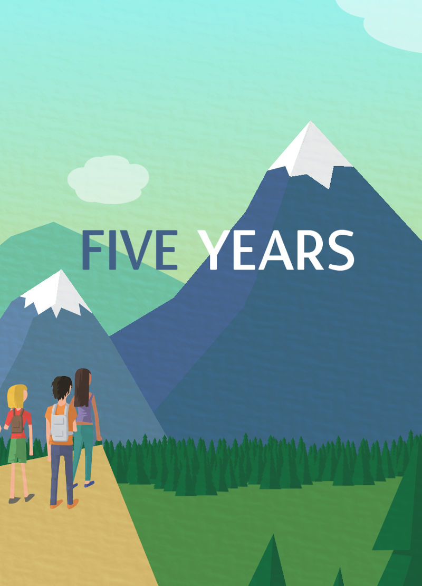

Five Years
En quelques mots
Projet réalisé à deux, Five years est un parcours paisible durant lequel vous serez ivité à renseigner vos rêves, vos objectifs pour les cinq prochaines années. Pour découvrir, seul ou avec des amis cinq ans plus tard un email les récapitulant.
L'illustration est au coeur du site, chaque page a pour fond une image différente évoquant l'aventure, le rêve et le partage.
style graphique choisi s'inspire de la tendance flat design, l'ajout d'une texture papier donne un effet papercut qui pour moi participe à une ambiance de création et de rêverie. Les couleurs elles sont relativement douce pour rendre la visite agréable et permettre une bonne lisibilité des textes.